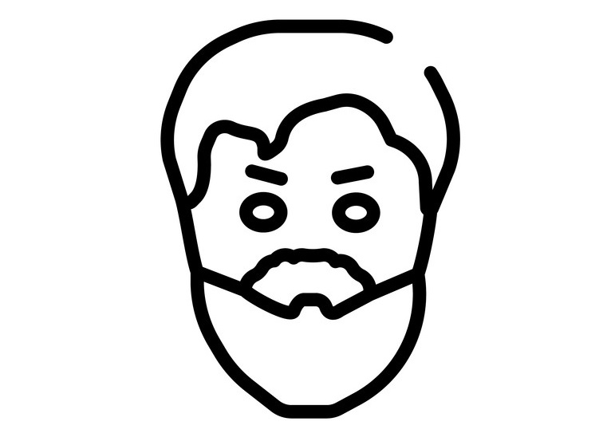

Мишель де Монтень
28 февраля 1533 г. – 13 сентября 1592 г.

Детство и юность
Французский юрист, политик и философ, занимавшийся проблемами морали; блестящий писатель и очеркист, по своему мировоззрению ярко выраженный скептик. В своем главном сочинении «Опыты» выступает против схоластики и догматизма, рассматривает человека как самую большую ценность.
Мишель Монтень родился 28 февраля 1533 года в замке Монтень, в Перигоре - области на юго-западе Франции. По отцовской линии Монтень происходил из богатой купеческой семьи Эйкемов, получившей дворянство в конце XV века и прибавившей к своей фамилии еще фамилию Монтень. Отец Монтеня, Пьер Эйкем, был человек незаурядный. Он любил книги, много читал, писал стихи на латыне.
По принятому в богатых французских семьях обычаю, мать Монтеня не кормила его сама. Пьер Эйкем решил отправить его в бедную крестьянскую семью. Когда ребенку было около двух лет, Пьер Эйкем взял его домой и, желая обучить латинскому языку. В доме соблюдалось нерушимое правило, согласно которому все - и отец, и мать, и обученные некоторым латинским фразам слуги обращались к ребенку только по-латыни. Благодаря этому Монтень усвоил латинский язык как родной. Греческому языку Мишеля обучали другим способом, используя игры и упражнения. В шесть лет Мишеля отправили учиться в колледж в Бордо. О следующих за этим нескольких годах жизни Монтеня сохранилось мало сведений. Достоверно известно лишь, что он изучал право, так как отец готовил его к магистратуре. Когда Монтеню был двадцать один год, Пьер Эйкем купил должность советника при Счетной палате в Периге; но затем, будучи избранным мэром города Бордо, он отказался от приобретенной должности в пользу сына.
Философия Монтеня
Скептицизм Монтеня
Скептицизм Мишеля де Монтеня представляет собой нечто среднее между скептицизмом жизненным, который является результатом горького житейского опыта и разочарования в людях, и скептицизмом философским, в основе которого стоят определённые убеждения в неправильном факте человеческого познания. Душевное равновесие, разносторонность и здравый смысл выводит его - из крайности того и другого направления. Признаётся эгоизм и эгоистические нотки, которые являются главной причиной действий человека. Мишеля де Монтеня не возмущает это, он находит это вполне правильным и даже необходимым фактом для счастья человеческого бытия и жизни. Потому что, если человек будет принимать интересы других людей так же близко к сердцу, как свои собственные, то он не будет чувствовать душевное спокойствие и счастье. Монтень с критикой отзывается о человеческой гордости, он доказывает, что человек не сможет познать абсолютных истин.
Основная мораль Монтеня
Основная черта в морали Монтеня является глубинное стремление к счастью. Данные взгляды он перенял от некоторых философов, и на него же оказали огромное влияние Эпикур и особенно Сенека и Плутарх.
Учения стоиков помогают ему выработать те нравственные равновесия, те философские ясности духа, которые стоики считают главным условием человеческого счастливого бытия. По мнению Монтеня, человек живёт не для того, чтобы приносить в жизнь себе нравственный идеал и быть ближе к нему, а для того, чтобы быть счастливым человеком.
Отношение к несчастью
К неизбежным несчастьям разумно относиться с покорностью. Нужно стараться поскорей свыкнуться с ними. Нельзя заменить неисправность одного органа усиленной деятельностью другого и другое. Что касается субъективных несчастий, то от самих людей в большой степени ослабить их остроту. Чтобы это заметить, нужно взглянуть с философской точки зрения на славу, богатство, почести и прочее. В обязанности человека входят в первую очередь отношение к самому себе, за данными пунктами должны следовать обязанности по отношению к другим людям и к обществу в целом.
Личная жизнь
В 1565 году Мишель женился. Невеста была из зажиточного семейства, поэтому мужчина получил богатое приданое. Спустя 3 года после бракосочетания скончался отец. Он оставил наследнику имение, где тот и поселился. В 1571-м политик продал судейскую должность, вышел в отставку и получил возможность заниматься чем заблагорассудится, так как о доходе можно было не переживать.
В семье Монтеня царили мир, гармония и взаимопонимание. У него было много отпрысков, но малыши не доживали до зрелого возраста. Дети погибали в юношеские годы или во младенчестве. В живых осталась только дочь.
Во взаимоотношениях с близкими философ придерживался взглядов, которые впоследствии описал в трудах. Он размышлял о том, что отношения с супругой должны быть дружными, даже если не испытываешь любви. Занимаясь воспитанием детей, следует заботиться об их здоровье и стараться дать все необходимое. Основные идеи писателя в части отношений кажутся консервативными, но в реальности вполне экологичны. Возможно, поэтому личная жизнь мыслителя со стороны казалась благополучной.
Смерть
Мыслитель и гуманист умер в сентябре 1592 года в родном имении, в библиотеке замка. В наследство потомкам писатель оставил библиографию из нескольких произведений, которые сейчас имеют художественную и культурную ценность.
Основные труды
- «Опыты»
- «Об искусстве поисков истины»
- «О трех истинно хороших женщинах»
- «Об искусстве жить достойно»
Галерея

- «Опыты»
- «Об искусстве поисков истины»
- «О трех истинно хороших женщинах»
- «Об искусстве жить достойно»